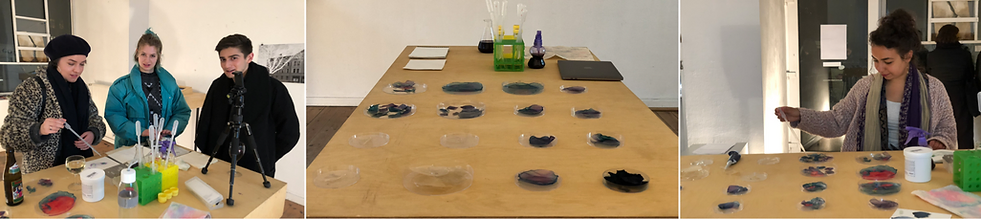

物体在说话Object is Talking
项目说明按旧站英文原文保留；时间与个人介绍反映当时的作品集记录。Original portfolio text is preserved in English. Dates and biographical information reflect the archived portfolio; see the academic homepage for current information.
物体在说话：艺术效果展示 / Object is Talking: Art Effect
Object is talking (12.2017--03.2018)
This work is based on a research done by MIT media lab that uses organic fluid-based molecules. The molecules anthocyanin, vanillin, chitosan are used as dopants that can sense different pH values. The output is in the form of a broad spectrum of colors, odors and shapes. Based on this, the experiment focus on color changing, using kappa-carrageenan as substrate to present the reaction in a certain form. The outcome shows chemical reactions that are in daily life unreadable and unseen. What is shown here is a new design language to create new appliances. In the exhibition, color changing can be seen both in liquid and solid statues.
For more information, please click here
Process of making color changing film

Exhibition in Berlin (31.3.2018)

Reference
Viirj Kan. 2017. Organic Primitives: Synthesis and Design of pH-Reactive Materials using Molecular I/O for Sensing, Actuation, and Interaction. Proceedings of the 2017 CHI Conference on Human Factors in Computing Systems Pages 989-1000.